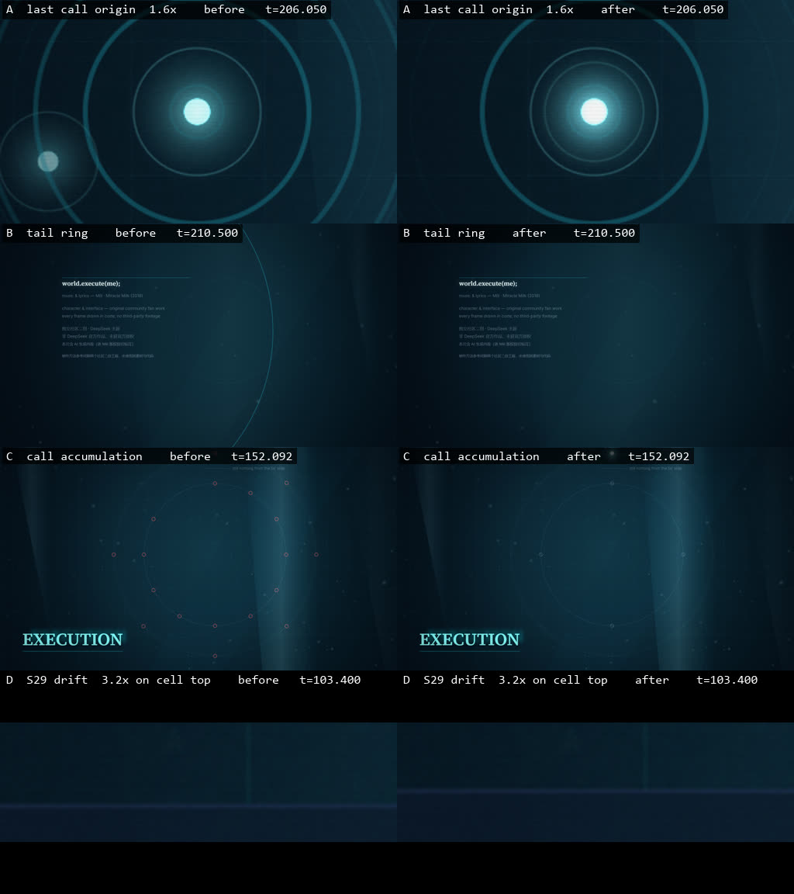

怎么用
- 点表格里任意一行的 审听，播放该点前后各几秒后自动停。
- 连续审听未核点 会按时间顺序自动跳着过一遍，可以随时停。
- 听完把 确认 打勾；复制结果 会把结论整理成文字，贴回对话即可。
- 标了 画面已修复 的行，本页成片是旧版，请用右侧对应的修复后短段。
- 键盘：
空格播放/停止，←/→±5 秒，回车审听当前行，N下一个未核点。
修复后的三段（与上表同一时间轴）
检查点
| 时间 | 镜头 | 类型 | 要听什么 | 状态 | 操作 |
|---|
四条缺陷的前后对照

A 最后一次呼叫起点 · B 片尾暗环复活 · C 第 5–12 次呼叫未累积 · D S29 漂移时间反向。
A、D 差异只有几十像素和几像素，所以用了放大裁切。文字记录见
docs/dsh-fix-round1-notes.md。
还没做的
- 人工审听切点：165 个边界里目前只有 68.300 由用户确认。就是这一页要做的事。
- 导演精修：减少每镜都出现的声呐/光带/颗粒，让重点镜头突出；字幕阅读节奏。
- 条件补图：另一形态胸像与尖鳍局部层，只在分镜确认保留那两个桥段时做。
- 重导全曲：修复后尚未重新渲染完整成片（约半小时）。
更新本页：改完分镜后在本项目目录运行
node tools/build-review-hub.mjs。